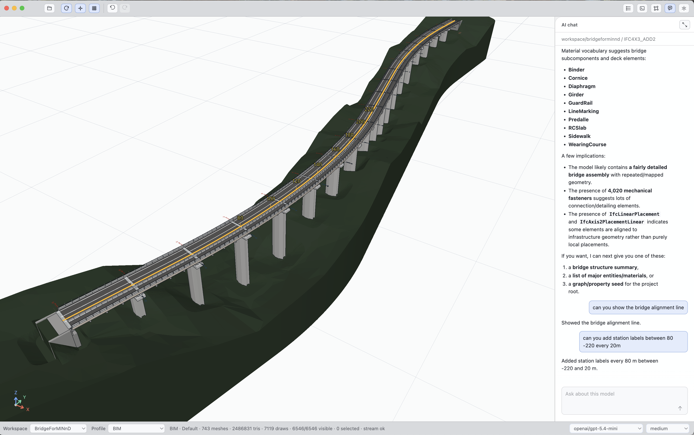
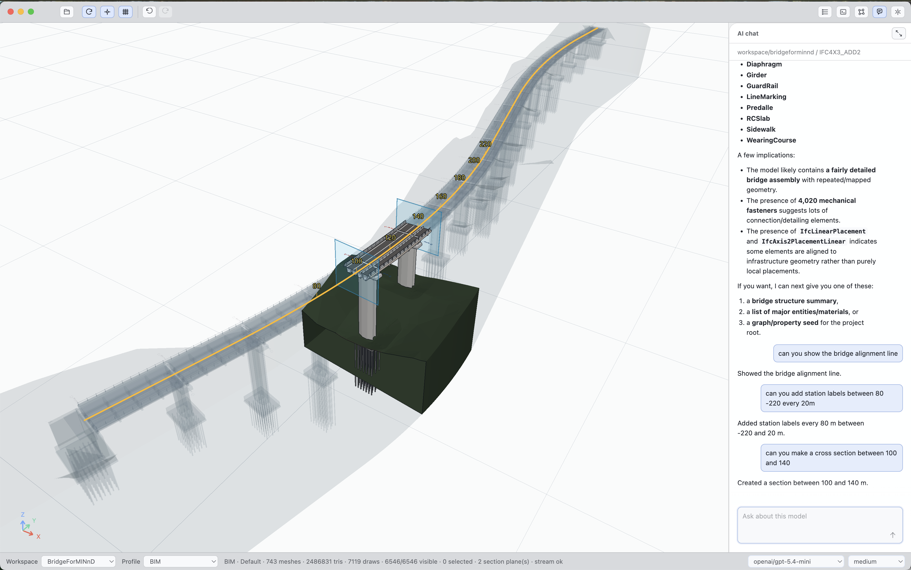
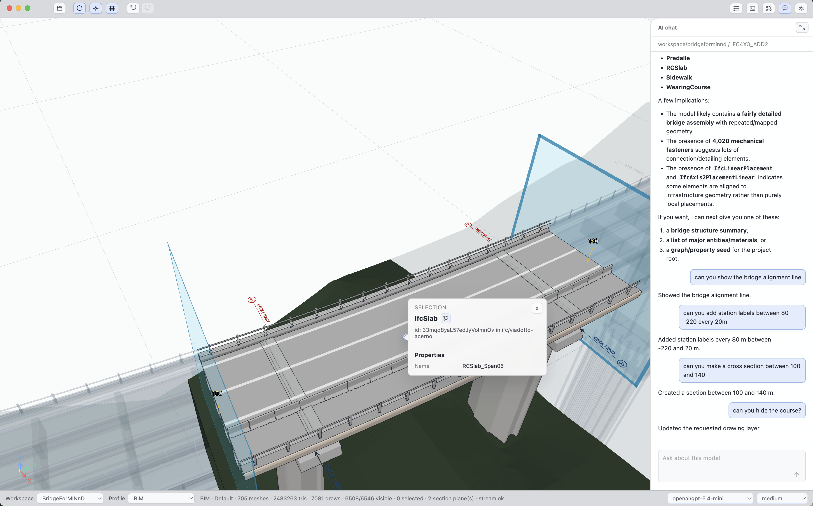
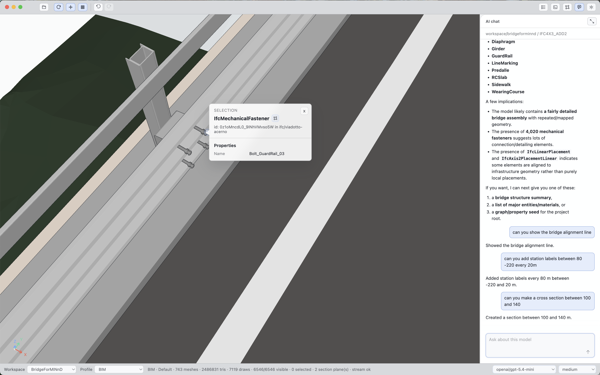

Velr-IFC
AI-native IFC, powered by Velr
Import, render, query, edit, and export IFC 2x3, IFC4, and IFC4x3 models, including infrastructure assets, with Velr as the blazing-fast property graph database underneath.
Velr-IFC turns BIM and infrastructure models into model-aware knowledge: entities, placements, alignments, assemblies, materials, quantities, and geometry become graph intelligence that agents and applications can use. Use the renderer, the Velr-IFC property graph, Velr, or agentic orchestration together, or pick the layer your application needs.

Full IFC coverage
Import IFC 2x3, IFC4, and IFC4x3, including infrastructure models with alignments, stations, bridge decks, girders, slabs, guardrails, and fasteners.
Property graph intelligence
Represent IFC entities, relationships, placements, materials, quantities, and model structure as a graph on Velr for fast traversal and retrieval.
Edit, render, export
Use the rendering framework for exploration, cross-sections, selection, takeoff, editing, and export workflows across web, desktop, mobile, edge, and cloud.

Agentic model exploration
Ask for structure summaries, alignment lines, station labels, cross-sections, and graph/property seeds directly against the model.

Infrastructure workflows
Work with bridge and civil assets as first-class IFC knowledge, from sections and takeoff to entity-level inspection.

Every object remains queryable
Select and inspect IFC entities, then use the Velr property graph to connect geometry, semantics, properties, and agent actions.